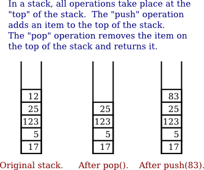
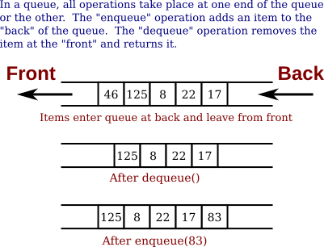
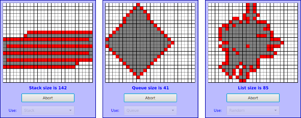

Stacks, Queues, and ADTs
A linked list is a particular type of data structure, made up of objects linked together by pointers. In the previous section, we used a linked list to store an ordered list of Strings, and we implemented insert, delete, and find operations on that list. However, we could easily have stored the list of Strings in an array or ArrayList, instead of in a linked list. We could still have implemented the same operations on the list. The implementations of these operations would be different, but their interfaces and logical behavior would still be the same.
The term abstract data type, or ADT, refers to a set of possible values and a set of operations on those values, without any specification of how the values are to be represented or how the operations are to be implemented. An "ordered list of strings" can be defined as an abstract data type. Any sequence of Strings that is arranged in increasing order is a possible value of this data type. The operations on the data type include inserting a new string, deleting a string, and finding a string in the list. There are often several different ways to implement the same abstract data type. For example, the "ordered list of strings" ADT can be implemented as a linked list or as an array. A program that only depends on the abstract definition of the ADT can use either implementation, interchangeably. In particular, the implementation of the ADT can be changed without affecting the program as a whole. This can make the program easier to debug and maintain, so ADTs are an important tool in software engineering. Abstraction is an important general concept in computer science. We have seen other examples: control abstraction in Subsection 3.1.4 and procedural abstraction in Section 4.1. Here, we are considering data abstraction.
In this section, we'll look at two common abstract data types, stacks and queues. Both stacks and queues are often implemented as linked lists, but that is not the only possible implementation. You should think of the rest of this section partly as a discussion of stacks and queues and partly as a case study in ADTs.
Stacks
A stack consists of a sequence of items, which should be thought of as piled one on top of the other like a physical stack of boxes or cafeteria trays. Only the top item on the stack is accessible at any given time. It can be removed from the stack with an operation called pop. An item lower down on the stack can only be removed after all the items on top of it have been popped off the stack. A new item can be added to the top of the stack with an operation called push. We can make a stack of any type of items. If, for example, the items are values of type int, then the push and pop operations can be implemented as instance methods
- void push(int newItem) — Add newItem to top of stack.
- int pop() — Remove the top int from the stack and return it.
It is an error to try to pop an item from an empty stack, so it is important to be able to tell whether a stack is empty. We need another stack operation to do the test, implemented as an instance method
- boolean isEmpty() — Returns true if the stack is empty.
This defines "stack of ints" as an abstract data type. This ADT can be implemented in several ways, but however it is implemented, its behavior must correspond to the abstract mental image of a stack.

In the linked list implementation of a stack, the top of the stack is actually the node at the head of the list. It is easy to add and remove nodes at the front of a linked list—much easier than inserting and deleting nodes in the middle of the list. Here is a class that implements the "stack of ints" ADT using a linked list. (It uses a static nested class to represent the nodes of the linked list, but that is part of the private implementation of the ADT.)
public class StackOfInts {
/**
* An object of type Node holds one of the items in the linked list
* that represents the stack.
*/
private static class Node {
int item;
Node next;
}
private Node top; // Pointer to the Node that is at the top of
// of the stack. If top == null, then the
// stack is empty.
/**
* Add N to the top of the stack.
*/
public void push( int N ) {
Node newTop; // A Node to hold the new item.
newTop = new Node();
newTop.item = N; // Store N in the new Node.
newTop.next = top; // The new Node points to the old top.
top = newTop; // The new item is now on top.
}
/**
* Remove the top item from the stack, and return it.
* Throws an IllegalStateException if the stack is empty when
* this method is called.
*/
public int pop() {
if ( top == null )
throw new IllegalStateException("Can't pop from an empty stack.");
int topItem = top.item; // The item that is being popped.
top = top.next; // The previous second item is now on top.
return topItem;
}
/**
* Returns true if the stack is empty. Returns false
* if there are one or more items on the stack.
*/
public boolean isEmpty() {
return (top == null);
}
} // end class StackOfIntsYou should make sure that you understand how the push and pop operations operate on the linked list. Drawing some pictures might help. Note that the linked list is part of the private implementation of the StackOfInts class. A program that uses this class doesn't even need to know that a linked list is being used.
(As an aside, the nested Node class in StackOfInts could have been record class (Section 7.4), since nodes don't need to be modified after they are created. The implementation of push() would have to be changed to use the record class constructor. See StackOfInt.java, which uses this approach.)
Now, it's pretty easy to implement a stack as an array instead of as a linked list. Since the number of items on the stack varies with time, a counter is needed to keep track of how many spaces in the array are actually in use. If this counter is called top, then the items on the stack are stored in positions 0, 1, ..., top-1 in the array. The item in position 0 is on the bottom of the stack, and the item in position top-1 is on the top of the stack. Pushing an item onto the stack is easy: Put the item in position top and add 1 to the value of top. If we don't want to put a limit on the number of items that the stack can hold, we can use the dynamic array techniques from Subsection 7.2.4. Note that the typical picture of the array would show the stack "upside down," with the bottom of the stack at the top of the array. This doesn't matter. The array is just an implementation of the abstract idea of a stack, and as long as the stack operations work the way they are supposed to, we are OK. Here is a second implementation of the StackOfInts class, using a dynamic array:
import java.util.Arrays; // For the Arrays.copyOf() method.
public class StackOfInts { // (alternate version, using an array)
private int[] items = new int[10]; // Holds the items on the stack.
private int top = 0; // The number of items currently on the stack.
/**
* Add N to the top of the stack.
*/
public void push( int N ) {
if (top == items.length) {
// The array is full, so make a new, larger array and
// copy the current stack items into it.
items = Arrays.copyOf( items, 2*items.length );
}
items[top] = N; // Put N in next available spot.
top++; // Number of items goes up by one.
}
/**
* Remove the top item from the stack, and return it.
* Throws an IllegalStateException if the stack is empty when
* this method is called.
*/
public int pop() {
if ( top == 0 )
throw new IllegalStateException("Can't pop from an empty stack.");
int topItem = items[top - 1]; // Top item in the stack.
top--; // Number of items on the stack goes down by one.
return topItem;
}
/**
* Returns true if the stack is empty. Returns false
* if there are one or more items on the stack.
*/
public boolean isEmpty() {
return (top == 0);
}
} // end class StackOfIntsOnce again, the implementation of the stack (as an array) is private to the class. The two versions of the StackOfInts class can be used interchangeably, since their public interfaces are identical—including the fact that an attempt to pop from an empty stack will result in an IllegalStateException.
It's interesting to look at the run time analysis of stack operations. (See Section 8.5). We can measure the size of the problem by the number of items that are on the stack. For the linked list implementation of a stack, the worst case run time both for the push and for the pop operation is Θ(1). This just means that the run time is less than some constant, independent of the number of items on the stack. This is easy to see if you look at the code. The operations are implemented with a few simple assignment statements, and the number of items on the stack has no effect.
For the array implementation, on the other hand, a special case occurs in the push operation when the array is full. In that case, a new array is created and all the stack items are copied into the new array. This takes an amount of time that is proportional to the number of items on the stack. So, although the run time for push is usually Θ(1), the worst case run time is Θ(n), where n is the number of items on the stack. (However, the worst case occurs only rarely, and there is a natural sense in which the average case run time for the array implementation is still Θ(1).)
Queues
Queues are similar to stacks in that a queue consists of a sequence of items, and there are restrictions about how items can be added to and removed from the list. However, a queue has two ends, called the front and the back of the queue. Items are always added to the queue at the back and removed from the queue at the front. The operations of adding and removing items are called enqueue and dequeue in this book. (These names are not completely standardized, in the way that "push" and "pop" are. For example, the operations are sometimes called "put" and "take.") An item that is added to the back of the queue will remain on the queue until all the items in front of it have been removed. This should sound familiar. A queue is like a "line" or "queue" of customers waiting for service. Customers are serviced in the order in which they arrive on the queue.

A queue can hold items of any type. For a queue of ints, the enqueue and dequeue operations can be implemented as instance methods in a "QueueOfInts" class. We also need an instance method for checking whether the queue is empty:
- void enqueue(int N) — Add N to the back of the queue.
- int dequeue() — Remove the item at the front and return it.
- boolean isEmpty() — Return true if the queue is empty.
A queue can be implemented as a linked list or as an array. An efficient array implementation is trickier than the array implementation of a stack, so I won't give it here. In the linked list implementation, the first item of the list is at the front of the queue. Dequeueing an item from the front of the queue is just like popping an item off a stack. The back of the queue is at the end of the list. Enqueueing an item involves setting a pointer in the last node of the current list to point to a new node that contains the item. To do this, we'll need a command like "tail.next = newNode;", where tail is a pointer to the last node in the list. If head is a pointer to the first node of the list, it would always be possible to get a pointer to the last node of the list by saying:
Node tail; // This will point to the last node in the list.
tail = head; // Start at the first node.
while (tail.next != null) {
tail = tail.next; // Move to next node.
}
// At this point, tail.next is null, so tail points to
// the last node in the list.However, it would be very inefficient to do this over and over every time an item is enqueued. For the sake of efficiency, we'll use another instance variable to store a pointer to the last node. This complicates the class somewhat; we have to be careful to update the value of this variable whenever a new node is added to the end of the list. Given all this, writing the QueueOfInts class is not all that difficult:
public class QueueOfInts {
/**
* An object of type Node holds one of the items
* in the linked list that represents the queue.
*/
private static class Node {
int item;
Node next;
}
private Node head = null; // Points to first Node in the queue.
// The queue is empty when head is null.
private Node tail = null; // Points to last Node in the queue
// when the queue is not empty.
/**
* Add N to the back of the queue.
*/
public void enqueue( int N ) {
Node newTail = new Node(); // A Node to hold the new item.
newTail.item = N;
if (head == null) {
// The queue was empty. The new Node becomes
// the only node in the list. Since it is both
// the first and last node, both head and tail
// point to it.
head = newTail;
tail = newTail;
}
else {
// The new node becomes the new tail of the list.
// (The head of the list is unaffected.)
tail.next = newTail;
tail = newTail;
}
}
/**
* Remove and return the front item in the queue.
* Throws an IllegalStateException if the queue is empty.
*/
public int dequeue() {
if ( head == null)
throw new IllegalStateException("Can't dequeue from an empty queue.");
int firstItem = head.item;
head = head.next; // The previous second item is now first.
// If we have just removed the last item,
// then head is null.
if (head == null) {
// The queue has become empty. The Node that was
// deleted was the tail as well as the head of the
// list, so now there is no tail. (Actually, the
// class would work fine without this step.)
tail = null;
}
return firstItem;
}
/**
* Return true if the queue is empty.
*/
boolean isEmpty() {
return (head == null);
}
} // end class QueueOfIntsTo help you follow what is being done here with the tail pointer, it might help to think in terms of a class invariant (Subsection 8.2.3): "If the queue is non-empty, then tail points to the last node in the queue." This invariant must be true at the beginning and at the end of each method call. For example, applying this to the enqueue() method, in the case of a non-empty list, the invariant tells us that a new node can be added to the back of the list simply by saying "tail.next = newNode. It also tells us how the value of tail must be set before returning from the method: it must be set to point to the node that was just added to the queue.
Queues are typically used in a computer (as in real life) when only one item can be processed at a time, but several items can be waiting for processing. For example:
- In a Java program that has multiple threads, the threads that want processing time on the CPU are kept in a queue. When a new thread is started, it is added to the back of the queue. A thread is removed from the front of the queue, it is given some processing time, and then—if it has not terminated—is sent to the back of the queue to wait for another turn.
- Events such as keystrokes and mouse clicks are stored in a queue called the "event queue." A program removes events from the event queue and processes them. It's possible for several more events to occur while one event is being processed, but since the events are stored in a queue, they will always be processed in the order in which they occurred.
- A web server is a program that receives requests from web browsers for "pages." It is easy for new requests to arrive while the web server is still fulfilling a previous request. Requests that arrive while the web server is busy are placed into a queue to await processing. Using a queue ensures that requests will be processed in the order in which they were received.
Queues are said to implement a FIFO policy: First In, First Out. Or, as it is more commonly expressed, first come, first served. Stacks, on the other hand implement a LIFO policy: Last In, First Out. The item that comes out of the stack is the last one that was put in. Just like queues, stacks can be used to hold items that are waiting for processing (although in applications where queues are typically used, a stack would be considered "unfair").
To get a better handle on the difference between stacks and queues, consider the sample program DepthBreadth.java. I suggest that you try out the program. The program shows a grid of squares. Initially, all the squares are white. When you click on a white square, that square is "marked" by turning it red. The program than starts marking squares that are connected, horizontally or vertically, to squares that have already been marked. This process will eventually process every square in the grid. To understand how the program works, think of yourself in the place of the program. When the user clicks a square, you are handed an index card. The location of the square—its row and column—is written on the card. You put the card in a pile, which then contains just that one card. Then, you repeat the following: If the pile is empty, you are done. Otherwise, remove an index card from the pile. The index card specifies a square. Look at each horizontal and vertical neighbor of that square. If the neighbor has not already been encountered, write its location on a new index card and put the card in the pile. You are done when there are no more index cards waiting in the pile to be processed.
In the program, while a square is in the pile, waiting to be processed, it is colored red; that is, red squares have been encountered but not yet processed. When a square is taken from the pile and processed, its color changes to gray. Once a square has been colored gray, the program will never consider it again, since all of its neighbors have already been accounted for. Eventually, all the squares have been processed, all the squares are gray, and the procedure ends. In the index card analogy, the pile of cards has been emptied.
The program can use your choice of three methods: Stack, Queue, and Random. In each case, the same general procedure is used. The only difference is how the "pile of index cards" is managed. For a stack, cards are added and removed at the top of the pile. For a queue, cards are added to the bottom of the pile and removed from the top. In the random case, the card to be processed is picked at random from among all the cards in the pile. The order of processing is very different in these three cases. Here are three pictures from the program, using the three different processing methods. In each case, the process was started by selecting a square near the middle of the grid. A stack is used for the picture on the left, a queue for the picture in the middle, and random selection for the picture on the right:

The patterns that are produced are very different. When using a stack, the program explores out as far as possible before it starts backtracking to look at previously encountered squares. With a queue, squares are processed roughly in the order of their distance from the starting point. When random selection is used, the result is an irregular blob, but it is a connected blob since a square can only be encountered if it is next to a previously encountered square.
You should experiment with the program to see how it all works. Try to understand how stacks and queues are being used. Try starting from one of the corner squares. While the process is going on, you can click on other white squares, and they will be added to the list of encountered squares. When you do this with a stack, you should notice that the square you click is processed immediately, and all the red squares that were already waiting for processing have to wait. On the other hand, if you do this with a queue, the square that you click will wait its turn until all the squares that were already in the pile have been processed. Again, the source code for the program is DepthBreadth.java.
Queues seem very natural because they occur so often in real life, but there are times when stacks are appropriate and even essential. For example, consider what happens when a routine calls a subroutine. The first routine is suspended while the subroutine is executed, and it will continue only when the subroutine returns. Now, suppose that the subroutine calls a second subroutine, and the second subroutine calls a third, and so on. Each subroutine is suspended while the subsequent subroutines are executed. The computer has to keep track of all the subroutines that are suspended. It does this with a stack.
When a subroutine is called, an activation record is created for that subroutine. The activation record contains information relevant to the execution of the subroutine, such as its local variables, parameters, and return address (the the point in the program where the computer should return to when the subroutine ends). The activation record for the subroutine is placed on a stack. It will be removed from the stack and destroyed when the subroutine returns. If the subroutine calls another subroutine, the activation record of the second subroutine is pushed onto the stack, on top of the activation record of the first subroutine. The stack can continue to grow as more subroutines are called, and it shrinks as those subroutines return.
In the case of a recursive subroutine, which calls itself, there can be several activation records on the stack for the same subroutine. This is how the computer keeps track of many recursive calls at the same time: It has a different activation record for each call.
Postfix Expressions
As another example, stacks can be used to evaluate postfix expressions. An ordinary mathematical expression such as 2+(15-12)*17 is called an infix expression. In an infix expression, an operator comes in between its two operands, as in "2 + 2". In a postfix expression, an operator comes after its two operands, as in "2 2 +". The infix expression "2+(15-12)*17" would be written in postfix form as "2 15 12 - 17 * +". The "-" operator in this expression applies to the two operands that precede it, namely "15" and "12". The "*" operator applies to the two operands that precede it, namely "15 12 -" and "17". And the "+" operator applies to "2" and "15 12 - 17 *". These are the same computations that are done in the original infix expression.
Now, suppose that we want to process the expression "2 15 12 - 17 * +", from left to right and find its value. The first item we encounter is the 2, but what can we do with it? At this point, we don't know what operator, if any, will be applied to the 2 or what the other operand might be. We have to remember the 2 for later processing. We do this by pushing it onto a stack. Moving on to the next item, we see a 15, which is pushed onto the stack on top of the 2. Then the 12 is added to the stack. Now, we come to the operator, "-". This operation applies to the two operands that preceded it in the expression. We have saved those two operands on the stack. So, to process the "-" operator, we pop two numbers from the stack, 12 and 15, and compute 15 - 12 to get the answer 3. This 3 must be remembered to be used in later processing, so we push it onto the stack, on top of the 2 that is still waiting there. The next item in the expression is a 17, which is processed by pushing it onto the stack, on top of the 3. To process the next item, "*", we pop two numbers from the stack. The numbers are 17 and the 3 that represents the value of "15 12 -". These numbers are multiplied, and the result, 51, is pushed onto the stack. The next item in the expression is a "+" operator, which is processed by popping 51 and 2 from the stack, adding them, and pushing the result, 53, onto the stack. Finally, we've come to the end of the expression. The number on the stack is the value of the entire expression, so all we have to do is pop the answer from the stack, and we are done! The value of the expression is 53.
Although it's easier for people to work with infix expressions, postfix expressions have some advantages. For one thing, postfix expressions don't require parentheses or precedence rules. The order in which operators are applied is determined entirely by the order in which they occur in the expression. This allows the algorithm for evaluating postfix expressions to be fairly straightforward:
Start with an empty stack
for each item in the expression:
if the item is a number:
Push the number onto the stack
else if the item is an operator:
Pop the operands from the stack // Can generate an error
Apply the operator to the operands
Push the result onto the stack
else
There is an error in the expression
Pop a number from the stack // Can generate an error
if the stack is not empty:
There is an error in the expression
else:
The last number that was popped is the value of the expressionErrors in an expression can be detected easily. For example, in the expression "2 3 + *", there are not enough operands for the "*" operation. This will be detected in the algorithm when an attempt is made to pop the second operand for "*" from the stack, since the stack will be empty. The opposite problem occurs in "2 3 4 +". There are not enough operators for all the numbers. This will be detected when the 2 is left still sitting in the stack at the end of the algorithm.
This algorithm is demonstrated in the sample program PostfixEval.java. This program lets you type in postfix expressions made up of non-negative real numbers and the operators "+", "-", "*", "/", and "^". The "^" represents exponentiation. That is, "2 3 ^" is evaluated as 23. The program prints out a message as it processes each item in the expression. The stack class that is used in the program is defined in the file StackOfDouble.java. The StackOfDouble class is identical to the first StackOfInts class, given above, except that it has been modified to store values of type double instead of values of type int.
The only interesting aspect of this program is the method that implements the postfix evaluation algorithm. It is a direct implementation of the pseudocode algorithm given above:
/**
* Read one line of input and process it as a postfix expression.
* If the input is not a legal postfix expression, then an error
* message is displayed. Otherwise, the value of the expression
* is displayed. It is assumed that the first character on
* the input line is a non-blank.
*/
private static void readAndEvaluate() {
StackOfDouble stack; // For evaluating the expression.
stack = new StackOfDouble(); // Make a new, empty stack.
System.out.println();
while (TextIO.peek() != '\n') {
if ( Character.isDigit(TextIO.peek()) ) {
// The next item in input is a number. Read it and
// save it on the stack.
double num = TextIO.getDouble();
stack.push(num);
System.out.println(" Pushed constant " + num);
}
else {
// Since the next item is not a number, the only thing
// it can legally be is an operator. Get the operator
// and perform the operation.
char op; // The operator, which must be +, -, *, /, or ^.
double x,y; // The operands, from the stack, for the operation.
double answer; // The result, to be pushed onto the stack.
op = TextIO.getChar();
if (op != '+' && op != '-' && op != '*' && op != '/' && op != '^') {
// The character is not one of the acceptable operations.
System.out.println("\nIllegal operator found in input: " + op);
return;
}
if (stack.isEmpty()) {
System.out.println(" Stack is empty while trying to evaluate " + op);
System.out.println("\nNot enough numbers in expression!");
return;
}
y = stack.pop();
if (stack.isEmpty()) {
System.out.println(" Stack is empty while trying to evaluate " + op);
System.out.println("\nNot enough numbers in expression!");
return;
}
x = stack.pop();
switch (op) {
case '+' -> answer = x + y;
case '-' -> answer = x - y;
case '*' -> answer = x * y;
case '/' -> answer = x / y;
default -> answer = Math.pow(x,y); // (op must be '^'.)
}
stack.push(answer);
System.out.println(" Evaluated " + op + " and pushed " + answer);
}
TextIO.skipBlanks();
} // end while
// If we get to this point, the input has been read successfully.
// If the expression was legal, then the value of the expression is
// on the stack, and it is the only thing on the stack.
if (stack.isEmpty()) { // Impossible if the input is really non-empty.
System.out.println("No expression provided.");
return;
}
double value = stack.pop(); // Value of the expression.
System.out.println(" Popped " + value + " at end of expression.");
if (stack.isEmpty() == false) {
System.out.println(" Stack is not empty.");
System.out.println("\nNot enough operators for all the numbers!");
return;
}
System.out.println("\nValue = " + value);
} // end readAndEvaluate()Postfix expressions are often used internally by computers. In fact, the Java virtual machine is a "stack machine" which uses the stack-based approach to expression evaluation that we have been discussing. The algorithm can easily be extended to handle variables, as well as constants. When a variable is encountered in the expression, the value of the variable is pushed onto the stack. It also works for operators with more or fewer than two operands. As many operands as are needed are popped from the stack and the result is pushed back onto the stack. For example, the unary minus operator, which is used in the expression "-x", has a single operand. We will continue to look at expressions and expression evaluation in the next two sections.